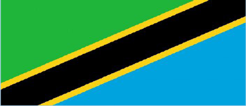

Tuimbe nyimbo
Tuimbe wimbo wa Taifa
Wimbo wa Taifa
Mungu ibariki Afrika,
wabariki viongozi wake
Hekima umoja na amani,
Hizi ni ngao zetu, Afrika na watu wake
Ibariki Afrika, ibariki Afrika
Tubariki watoto wa Afrika
Mungu ibariki Tanzania,
dumisha uhuru na umoja
Wake kwa waume na watoto
Mungu ibariki, Tanzania na watu wake
Ibariki Tanzania, ibariki Tanzania
Tubariki watoto wa Tanzania
